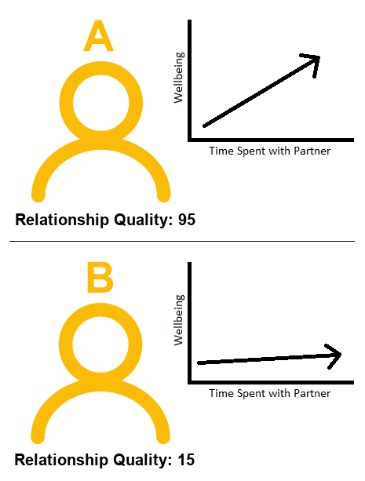

mydata <- read_csv("C:/Users/jking34/Desktop/uoepsy/data/usmr_mlr.csv")
mymodel <- lm(y ~ x1 + x2, data = mydata)9A: Interactions
“Holding Constant”
When we first learned about multiple linear regression, we talked about the idea of the coefficients as “holding constant” the other predictors in the model.
When considering a model with the following structure:
\[ y = b_0 + b_1(x_1) + b_2(x_2) + \epsilon \]
When we fit this model to our data, what we get out is some estimated values for the coefficients \(b_0\), \(b_1\), and \(b_2\):
Coefficients:
Estimate Std. Error t value Pr(>|t|)
(Intercept) -2.39138 3.67735 -0.650 0.51867
x1 0.17570 0.06435 2.730 0.00888 **
x2 -0.64756 0.19959 -3.244 0.00217 **The coefficient we get out for \(x_1\) tells us that the model estimates that \(y\) will increase by 0.17 for every increase of 1 unit in \(x_1\), provided that we hold \(x_2\) constant.
What this means is that it doesn’t really matter at what value \(x_2\) we consider, the association between \(x_1\) with \(y\) is the same.
As it happens, we can use plot_model to show us the how \(y\) changes with \(x_1\) for some specific values of \(x_2\). Below, the red line is the association between \(y\) and \(x_1\) when \(x_2 = 3\), the blue is when \(x_2 = 12\), and the green is when \(x_2 = 20\). As we can see, the slope of \(y\) on \(x_1\) is the same.
library(sjPlot)
plot_model(mymodel, type = "eff", terms=c("x1", "x2 [3, 12, 20]"))Example
We’re interested in estimating the association between cognition and BMI, after controlling for differences due to age.
\[ \text{score on test of cognition} = b_0 + b_1(\text{age}) + b_2(\text{BMI}) + \epsilon \]
We would fit the model using lm():
lm(score ~ 1 + age + BMI, data = ourdata)and we might get some coefficients (estimates for the \(b_?\) values) such as those below:
(I’ve just made up some nice round numbers to make it easier to think about)
Coefficients:
Estimate ... ...
(Intercept) 160.000 ... ...
age -1.50000 ... ...
BMI -2.50000 ... ...The coefficient of interest, the one for BMI, is telling us that “a 1 unit increase in BMI is associated with a -2.5 decrease in Scores on the cognitive test, holding age constant”.
Consider 3 people:
The coefficient for BMI represents the difference in cognitive scores we would expect between Person A and Person B.
Think about why this is. For some person \(i\), their model predicted score is: g
\[ \hat{score_i} = b_0 + b_1(age_i) + b_2(BMI_i) \]
Which from our model estimates is:
\[ \hat{score_i} = 160 - 1.5(age_i) - 2.5(BMI_i) \]
- Person A’s score = \(160 - (1.5*50) - (2.5*22) = 30\)
- Person B’s score = \(160 - (1.5*50) - (2.5*23) = 27.5\)
- Person B’s score = \(160 - (1.5*60) - (2.5*23) = 12.5\)
The difference in model estimated Score between Person A and Person B is the coefficient of BMI, because those two people only differ on BMI. Person A and Person C also differ on age. This is how the coefficient of BMI is interpreted as “holding age constant” - it is a comparison between two hypothetical people who differ on BMI but are identical with respect to the other predictors in the model.
“It Depends…”
However, the are lots of practical cases where we might think that the relationship between two variables depends on the value of a third. Put another way, where the effect of one predictor in our model depends on another.
Below are some examples of this idea, where the explanatory variables (the predictors) are of different types (e.g. continuous, categorical, etc):
Example 1
The amount to which spending time with my partner influences my wellbeing depends on the quality of our relationship.
Variables:
- Outcome: Wellbeing (questionnaire score ranging from 0 to 32)
- Continuous Predictor: Time spent with partner (hours per week)
- Continuous Predictor: Relationship Quality (rating from 0 to 100)
Example 2
The influence of air-pollution on cognitive functioning depends on your genetic status.
Variables:
- Outcome: Cognitive Functioning measured via the MMSE. Possible scores range from 0 to 30. Lower scores indicate poorer cognitive functioning
- Continuous Predictor: Air-Quality Index (AQI). Ranges from 0 to 500. The higher the AQI value, the greater the level of air pollution.
- Binary Predictor: APOE-4 Genotype status: Present vs Absent
Example 3
In each of the above examples, we can no longer think about “the relationship between [outcome] and [predictor]” without discussing the level of the other predictor.
Using Example 1 above, let’s return to thinking about this in terms of two different observations (i.e. two different people):

How do we think each person’s wellbeing will change if they spend an extra hour with their partner? Person A (who has a really great relationship), will probably increase in wellbeing if they spend an extra hour with their partner. Will it be the same for Person B? Person B doesn’t have a great relationship. If they spend an extra hour with their partner, we probably wouldn’t expect their wellbeing to increase to the same extent as Person A. It might even go down for Person B!
So really, we need an extra bit of information to tell us “how much does the association between ‘time spent with partner’ and wellbeing change as relationship quality changes?” And this is something we can include in our model, and get an estimate for.
Interactions
m = lm(wellbeing~partner_time*relationship_qual,partnertime)
tibble(
relationship_qual = c(15,15,95,95),
partner_time = c(4,5,4,5)
) %>% mutate(
p = predict(m, newdata=.)
)# A tibble: 4 × 3
relationship_qual partner_time p
<dbl> <dbl> <dbl>
1 15 4 10.6
2 15 5 9.88
3 95 4 20.4
4 95 5 23.2 - switch to eg: x1 eff is bigger the more x2 you are.
- how much bigger? we can model that
We can model the idea of “association of \(x_1\) with \(y\) depends on the level of \(x_2\)” by including a product term between the two predictors. The model would take the form:
\[ y = b_0 + b_1(x_1) + b_2(x_2) + b_2(x_1 \cdot x_2) + \epsilon \]
What this is doing is predicting \(y\) by some amount of \(x_1\), and some amount of \(x_2\), and a little addition to each of those amounts depending on the value of of the other variable.
To provide a visual intuition and build on how we have been thinking of multiple regression upto this point, our regression surface is no longer flat, but twists. This is because the slope along values of \(x_1\) changes as we move up \(x_2\):
Example 1
In this example, we can see that at lower values of , the slope of TODO is but as we move up TODO it becomes TODO

Example 2
This kind of interaction (where one predictor is continuous and the other is categorical), is sometimes the easiest to think about.
In contrast to modelling two lines as being parallel, the interaction allows them to be non-parallel.
TODO

Example 3
Interactions between multiple categorical variables are often the more difficult ones. If it helps, you might think of this in the same way as a twisted surface, only there’s no values in middle of the surface, only at the edges.
The basic premise remains the same, however: TODO
library(scatterplot3d)
plt <- with(catcat,scatterplot3d(x1,x2,y, scale.y=.8,angle=-30,
x.ticklabs = c(0,NA,NA,NA,NA,1),
y.ticklabs = c(0,NA,NA,NA,NA,1),
main="y~x1*x2\n(x1 and x2 are categorical)"))
fit = lm(y~x1*x2,catcat)
pp <- expand_grid(x1=seq(0,1,.1), x2=seq(0,1,.1))
pp$y <- predict(fit, pp)
pp1 <- pp[pp$x2==0,]
pp2 <- pp[pp$x2==1,]
pp3 <- pp[pp$x1==0,]
pp4 <- pp[pp$x1==1,]
plt$points(pp1$x1,pp1$x2,pp1$y,type="l")
plt$points(pp2$x1,pp2$x2,pp2$y,type="l")
plt$points(pp3$x1,pp3$x2,pp3$y,type="l")
plt$points(pp4$x1,pp4$x2,pp4$y,type="l")
fitting an interaction in R
specifying the interaction term explicitly in R requires using the colon, as in x1:x2. So to specify the model we would use:
lm(y ~ x1 + x2 + x1:x2)
rtip in R interaction term is colon a:b a*b is a+b+a:b
So we can do the same by just writing
lm(y ~ x1 * x2)
don’t fit model with a:b and not a + b in it. think about the logic. a:b = “effect of a depends on b” but by not including “a” in the first place, it’s unclear what we’re allowing to depend on b
Interpretation
including the a:b means a and b become interpreted at some specific value.
consider y ~ x2*x2+x3+x4
interpretation each mention predictors not interacting stay the same as prev mlr week.
example panelset interpretation
Visualisation
Above, we again saw lots of 3-dimensional plots to try and help in building our intuition about how we model an interaction. As before, this isn’t useful for presenting our findings when we use these types of models in real research (in part because our models often have more than 2 predictors, and so have more than 3 dimensions).
What we do is therefore find ways to represent the relationships in 2-dimensional plots. This is slightly different depending on the type of variables we are dealing with.
- For a continuous \(\times\) categorical interaction, we can plot the association of the continuous predictor with the outcome, for each level of the categorical variable.
- For a continuous \(\times\) continuous interaction, we can plot the association of one predictor at some judiciously chosen values of the other (e.g. at the min, mean and max, or at -1 SD, mean, and +1SD).
- For a categorical \(\times\) categoircal interaction, we can plot the various group means, with dotted lines to illustrate the non-parallelism
fit = lm(y~x1*x2,catcat %>% mutate(across(x1:x2,factor)))
sjPlot::plot_model(fit, type="int",show.data=T)+geom_line()
# it's just viewing that cube from one side
library(scatterplot3d)
plt <- with(catcat,scatterplot3d(x1,x2,y, scale.y=0,angle=90,
x.ticklabs = c(0,NA,NA,NA,NA,1),
y.ticklabs = c(0,NA,NA,NA,NA,1),
main="y~x1*x2\n(x1 and x2 are categorical)"))
fit = lm(y~x1*x2,catcat)
pp <- expand_grid(x1=seq(0,1,.1), x2=seq(0,1,.1))
pp$y <- predict(fit, pp)
pp1 <- pp[pp$x2==0,]
pp2 <- pp[pp$x2==1,]
pp3 <- pp[pp$x1==0,]
pp4 <- pp[pp$x1==1,]
plt$points(pp1$x1,pp1$x2,pp1$y,type="l")
plt$points(pp2$x1,pp2$x2,pp2$y,type="l")
plt$points(pp3$x1,pp3$x2,pp3$y,type="l")
plt$points(pp4$x1,pp4$x2,pp4$y,type="l")
Optional: further exploration
Simple Slopes
we’ve kind of already done it visually.
plot the slope of y~x1 for certain values of x2.
we’ve done this visually, but it would be nice to get out a “is y~x1 significant when x2 = ?”